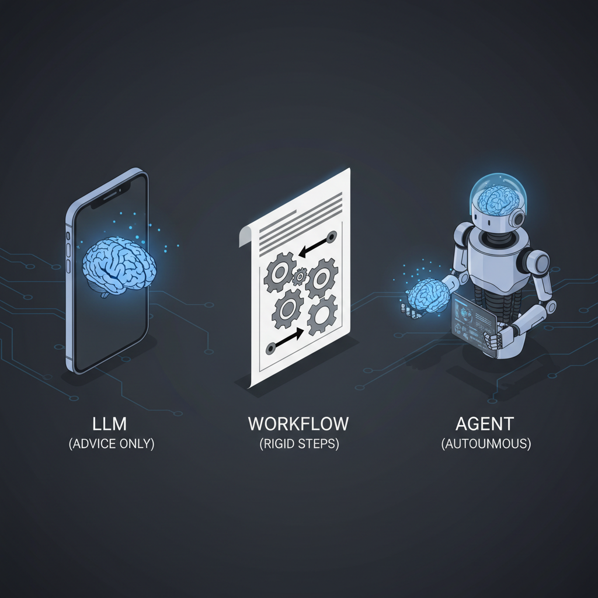
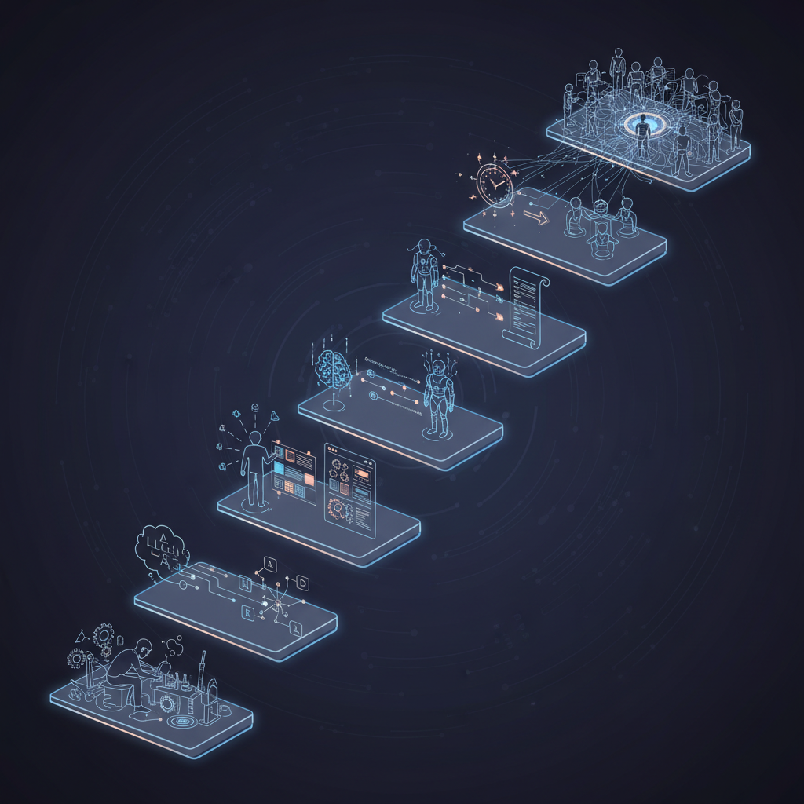
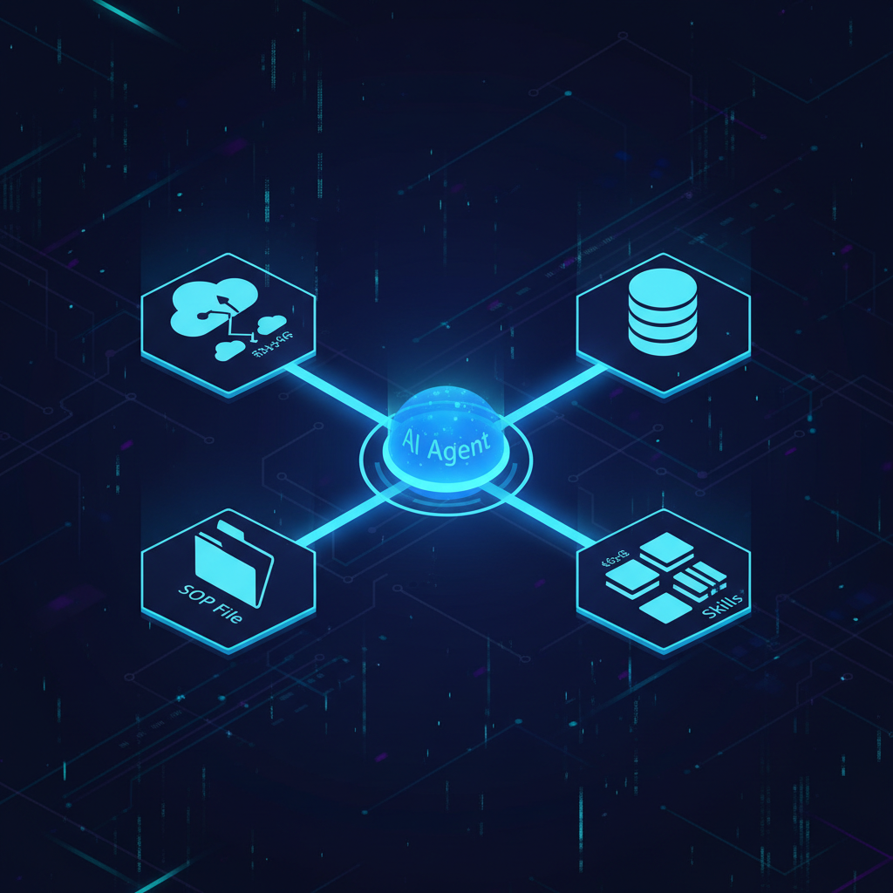

Todo mundo está falando de AI agents — só que pouquíssimas pessoas estão de fato construindo um. Plugar um chatbot no site é só atualização de UI. A oportunidade real está em agentic AI, e a maior parte do mercado está deixando passar.
Este post é adaptação enriquecida em PT-BR do "How Do AI Agents Work" de Neo Kim e Fran Soto (engenheiro Amazon/Ring), com adições de frameworks atuais, comparativos e o caso de uso prático que mais tem retorno: incident response autônomo.
A metáfora que finalmente fez click — montagem de móvel

Imagine que você acabou de comprar um móvel e precisa montar.
- O manual de instruções da caixa é um workflow. Caminho linear que funciona perfeitamente enquanto tudo dá certo. É o equivalente a scripts e código tradicional. Mas se você quebrar uma peça, o manual não te ajuda. Não há recuperação.
- Um LLM é como ter um SAC pra ligar. Você descreve a peça quebrada, e atende uma pessoa brilhante e empática que explica por que a madeira rachou. Mas no fim da ligação, você ainda está sentado no chão com a peça quebrada. Por mais simpático que seja o atendente, ele não tem mãos pra ajudar.
- Você é o agent nesse cenário. É você quem tem as ferramentas — martelo, prego, cola, furadeira. É você quem tem o cérebro pra decidir como usar e como recuperar de erros que não estavam no manual.
Construir um AI agent é dar ao modelo tanto o cérebro quanto as mãos pra trabalhar por você. Fran Soto usa o exemplo de incident response agent no post — mas os princípios valem pra praticamente qualquer processo repetível.
Por que o lado não-determinístico de AI é bom (e não bug)
Tem muito ceticismo sobre AI porque ela não é tão confiável quanto código tradicional. Estamos acostumados com código que faz exatamente a mesma coisa toda vez. Mas a falta de determinismo é uma feature pra certas tarefas.
Humanos não são tão confiáveis quanto máquinas, e ainda assim somos nós que consertamos máquinas quando elas quebram. Preferimos humanos usando máquinas porque traz o melhor dos dois mundos: máquinas dão velocidade e precisão do determinismo; humanos lidam com o que sai do script.
Um agent imita essa habilidade humana de adaptar a situações novas. Quando um sistema falha de forma não-antecipada, o agent revisa logs e ajusta a abordagem. É self-healing.
O framework de 10 passos — de manual a fleet autônoma

Construir um agent não é flip de switch. É processo iterativo onde você gradualmente offloada carga cognitiva pra máquina enquanto mantém olho na performance. Fran propõe 10 passos:
Passo 1 — Faça o trabalho manualmente
Documente como você faz hoje, como se fosse um runbook pra outra pessoa seguir:
- Abrir dashboard de monitoramento e checar métrica fora do padrão.
- Conferir runbooks pra troubleshooting da métrica específica.
- Consultar logs de erro dos últimos 15 minutos, procurando requests com HTTP 500.
Estado atual: você é o gargalo. Toda step exige sua intervenção e atenção. Esse é o baseline a melhorar.
Passo 2 — Comece a usar um LLM
Com processo manual sólido, use como guia pra um LLM. Sai do trabalho braçal pra ter um assistente que analisa dados. Cola logs do terminal, pede:
"Revise estes logs e ache qual erro está acontecendo: <cola dos logs>"
Preste atenção onde o AI não faz o que você quer e como você corrige. Essas anotações viram seus prompts e skills no futuro.
Estado atual: AI começa a analisar padrões, mas você ainda orquestra tudo e move dado manualmente.
Passo 3 — Adicione MCP Tools
Você ainda está no meio, atuando como ponte. Próximo passo: parar de copy-paste. Use o Model Context Protocol (MCP) pra permitir que o AI execute ações.
MCP é como HTTP pra AI agents — uma API padronizada que deixa o modelo executar operações em outros sistemas. Com MCP servers conectados (Datadog, GitHub, Jira, Slack, PagerDuty, AWS), seus prompts viram:
"Obtenha os alarmes que dispararam nos últimos 15 minutos. Me dê apenas o nome do alarme."
"Cheque os logs por requests com HTTP 500. Me dê a mensagem do log, mensagem de erro, e stack trace..."
Catálogo de MCP servers oficiais: github.com/modelcontextprotocol/servers. Para integrações enterprise, Composio tem 300+ tools prontas.
Passo 4 — Adicione Agent Skills

Onboarde o AI em incident response como você onboarderia um júnior recém-contratado: ensine como usar cada tool, ensine como você quer o trabalho feito. Combine guides + Standard Operating Procedures.
Exemplo: se as MCP tools de log exigem query como input, crie a Skill de "build de query" — markdown com guia dos campos dos logs + scripts pequenos pra montar queries de um template. Muito melhor que fazer o AI escrever queries complexas toda vez (e reduz hallucinations de campos que não existem).
Skills são carregadas só quando necessárias (saving tokens). Sintaxe tipo Cursor:
/metrics-and-alarm-management Find the alarms fired
<LLM responde com info de métricas>
/my-service-logs-management Find logs with errors in these endpoints
<LLM responde com info de logs>
/code-expert Where in code is this log emitted?
<LLM responde com info de código>Convergência de mercado: Anthropic Skills, Claude Code skills, Cursor rules — todos seguem o mesmo padrão de markdown + scripts opcionais carregados sob demanda.
Passo 5 — Adicione memory
Toda nova sessão, o agent tem amnésia. Sabe resolver incidentes mas não lembra do que resolveu ontem. Solução: short-term + long-term memory.
- Short-term memory: built-in. É a habilidade do AI de lembrar mensagens anteriores na conversa atual. Quando você chama a API pra resposta, manda as mensagens anteriores junto com a nova.
- Long-term memory: arquivos que o AI lê, persistentes entre sessões.
Cada empresa tinha o próprio formato; agora há padrão emergente: AGENTS.md. Arquivo lido por qualquer AI, independente de qual seja (Claude Code, Cursor, Gemini CLI, etc.).
Pra memória semântica avançada: Mem0 ou Zep (cobertos no post sobre memória de agents).
Passo 6 — Orquestre com Agent SOPs
Você ainda está dirigindo cada movimento. Crie um Standard Operating Procedure (SOP) — arquivo step-by-step que o AI segue. Convenção emergente: usar palavras-chave do RFC 2119 (MUST, SHOULD, MAY) pra especificar níveis de requirement.
Em vez de prompts step-by-step, você invoca:
/incident-response-agent-sop Investigate the incident reported at JIRA-1234O agent vira muito mais autônomo. Humano só invoca o SOP certo, agent cuida do resto — tipo um manager achando o engineer certo pra entrar na call.
Passo 7 — Defina um agent (com dependências)
Com dezenas de MCP tools, skills e SOPs, vira impossível configurar tudo manualmente. Solução copiada de software tradicional: declare as dependências do agent num manifesto. Cada agent tem seu próprio package de tools + skills + SOPs.
Hoje não tem package manager universal pra isso (ainda), mas plataformas como Claude Code com plugins, Cursor, OpenAI Swarm, e Amazon Kiro já vão nessa direção.
Passo 8 — Execute o agent periodicamente
Por que você ainda está sendo paged às 3 da manhã só pra invocar o agent e esperar? Setup o agent pra rodar autônomo. Script simples: checa por trabalho → roda agent se houver → dorme N minutos. CLI tools tornam isso trivial (Claude Code, gemini-cli, codex CLI).
Passo 9 — Melhore state management
Agent rodando no laptop é POC. Pra produção, integre no workflow:
- Webhook do PagerDuty → trigger automático pro AI agent rodando em Lambda.
- Pra relatórios periódicos: cron job que dispara em intervalos regulares.
- Agent faz investigação, posta sumário no Slack channel.
Agora seu agent trabalha enquanto você dorme — mesmo que faça apenas uma coisa específica bem.
Passo 10 — Escale pra múltiplos agents
Como um time de engineers, você não pede pra uma pessoa só lidar com todo microsserviço. Mesma lógica vale pra agents. Final state: múltiplos agents colaborando no mesmo incidente, cada um com expertise específica (database, network, application, security), orquestrados por um agent supervisor.
Patterns comuns:
- Hierarchical: supervisor agent delega pra sub-agents especializados.
- Peer-to-peer: agents se comunicam via message bus (Kafka, NATS).
- Blackboard: agents leem/escrevem em estado compartilhado (Redis, S3).
Frameworks: LangGraph, CrewAI, Microsoft AutoGen, OpenAI Swarm.
Quando manter humano no loop
Nem toda ação pode ser autônoma. Defina guardrails que exigem human approval pra:
- Ações destrutivas (DELETE, DROP, rm -rf, payment, refund).
- Ações irreversíveis (deploy em prod, terminate EC2, force-push).
- Ações com blast radius alto (escala recursos cloud, dispara campanha de email).
- Decisões que requerem contexto político/social (responder cliente bravo no Twitter).
Pattern recomendado: agent prepara a ação + justificativa + diff, posta no Slack ou Jira, humano clica "approve". Frameworks como LangGraph interrupt() facilitam isso.
Stack pra começar amanhã
- IDE / runner: Claude Code (CLI + plugins) ou Cursor (IDE).
- Tools: MCP servers oficiais + Composio (300+ integrações).
- Memory: AGENTS.md + Mem0 ou Zep.
- Orchestration: LangGraph (fluxos complexos) ou CrewAI (multi-agent simples).
- Observability: LangSmith ou Langfuse.
- Scheduling: cron simples → AWS EventBridge → Temporal pra workflows complexos.
Conclusão — pra onde isso está indo
Em 2024, AI agents eram experimento. Em 2025, viraram produto (Claude Code, Cursor Composer, Devin). Em 2026, viram commodity — todo time decente terá pelo menos 1 agent rodando autônomo. Os times que vão se destacar são os que tratam agents como engenheiros juniores: onboard direito, dão tools, escrevem SOPs claros, monitoram performance, e iteram.
O framework de 10 passos do Fran não é mágica — é a aplicação rigorosa de práticas que já usamos em software tradicional (runbooks, dependências, schedulers) num novo tipo de "funcionário". Comece pequeno. Um agent. Uma tarefa. Mede. Itera. Em 90 dias você não vai querer voltar.
Fonte original: "I struggled with AI agents until I built an incident response agent" por Neo Kim e Fran Soto, publicado em The System Design Newsletter em 18 de março de 2026. Esta adaptação em PT-BR enriquece com frameworks atuais, patterns multi-agent e padrões emergentes (AGENTS.md, Claude Skills). Para o passo-a-passo do incident response agent, vale o post completo + o newsletter StrategizeYourCareer do Fran.